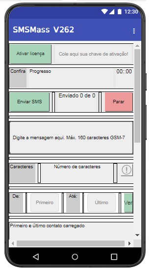
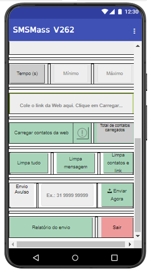
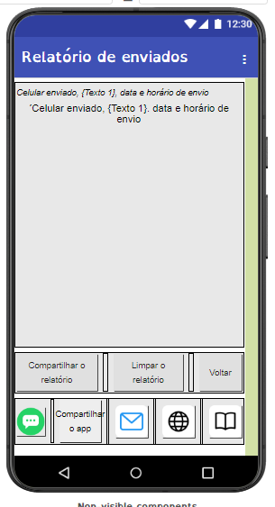

SMS
SMSManual do SMSMass
Guia completo em uma página só, pensado para ficar disponível também dentro do próprio app. Use o índice abaixo para pular direto ao tópico que precisa.
Um tour rápido pelas 3 telas do SMSMass
Antes de entrar em cada passo em detalhe, veja abaixo o que cada botão e campo faz nas telas do app. Os números na imagem batem com a legenda ao lado.

Tela principal
- 1Ativar licença — clique aqui e cole a chave de ativação que você recebeu na compra.
- 2Confira / Progresso / 00:00 — acompanhe em tempo real o andamento do disparo.
- 3Enviar SMS / Enviado X de Y / Parar — inicia o disparo, mostra quantos já foram enviados, e permite parar a qualquer momento.
- 4Caixa de mensagem — digite aqui o texto do SMS, até 160 caracteres no padrão GSM-7.
- 5Contador de caracteres — mostra quantos caracteres da mensagem já foram usados.
- 6De: Primeiro / Até: Último / Ver — define qual intervalo de contatos da planilha entra no disparo.
- 7Primeiro e último contato carregado — confirma que a planilha foi lida certo, mostrando o primeiro e o último nome.

Carregar contatos e envio avulso
- 1Primeiro e último contato carregado — mesma confirmação da tela anterior, sempre visível pra você conferir.
- 2Tempo (s) / Mínimo / Máximo — define o intervalo de tempo entre cada SMS enviado, pra não sobrecarregar a operadora.
- 3Carregar contatos da web / Total de contatos carregados — clique aqui pra carregar os contatos direto da planilha.
- 4Cole o link da Web aqui — cole aqui a URL da sua planilha do Google Sheets, depois clique em Carregar.
- 5Limpa tudo / Limpa mensagem / Limpa contatos e link — botões pra reiniciar cada parte do formulário, separadamente.
- 6Envio Avulso / Enviar Agora — envia um SMS pra um único número digitado na hora, sem precisar de planilha.
- 7Relatório do envio / Sair — abre o relatório da última campanha, ou fecha o app.

Relatório de envios
- 1Área do relatório — lista cada SMS enviado, com número, texto, data e horário.
- 2Compartilhar o relatório / Limpar o relatório / Voltar — compartilha o relatório por outro app, apaga o histórico, ou volta pra tela principal.
- 3Ícones de atalho — suporte via WhatsApp, compartilhar o app, e-mail, site e manual, todos a um toque.
Pra que tipo de mensagem o SMSMass serve
O SMSMass é uma ferramenta neutra de disparo — o uso depende de você. Alguns exemplos comuns entre quem já usa:
- Cobranças — lembrete de parcela em aberto, vencimento próximo, ou negociação de dívida.
- Alertas de órgãos públicos — comunicados oficiais, prazos, convocações e avisos de interesse coletivo.
- Pedidos de voto — campanhas eleitorais, de candidatos a cargos variados, dentro do período e das regras permitidas pela legislação eleitoral.
- Avisos gerais — mudança de endereço, horário de funcionamento, confirmação de agendamento, reagendamento.
- Ofertas e promoções — divulgação de produtos, condições especiais, datas comemorativas.
- Confirmação de números — validar se um número de celular está ativo e recebendo mensagens.
Vale sempre observar a legislação de SMS marketing e LGPD aplicável ao seu tipo de envio.
Requisitos
- Aparelho com Android 5.0 (Lollipop) ou superior.
- Chip de operadora ativo, com plano ou saldo disponível para envio de SMS — o app dispara pelo chip físico do celular, não pela internet.
- Conexão com internet (Wi-Fi ou dados móveis), usada apenas para ativar a licença e para enviar os relatórios de disparo ao servidor. O envio do SMS em si não depende de internet.
- Conta no Gmail.
- Conta no Google Drive.
- Planilha do Google Sheets com a lista de contatos.
O SMSMass não funciona em iPhone. Isso não é uma limitação do app. O SMSMass usa uma função exclusiva do sistema Android para enviar SMS diretamente pelo chip. O iOS não concede esse tipo de acesso a nenhum aplicativo, de nenhum desenvolvedor. É uma restrição da própria Apple.
Instalação
Clique no app SMSMass para iniciar a instalação. Durante a instalação, o Android vai pedir:
- Permissão para instalar. Clique em Permitir.
- Permissão para o Play Protect analisar o app. Permitir. Em alguns celulares, devido à diferença de fabricantes, o Play Protect apresenta a frase "Ver detalhes" — clique aí e autorize a análise. Sempre vai passar, pois o SMSMass não contém vírus.
- Pergunta se quer instalar: responda Sim.
- Clique em Abrir. Nos usos seguintes, depois de fechar o app, abra pela interface do celular, clicando no ícone dele.
- Se for a versão Trial, a licença já vem preenchida no topo da tela. Se for outra versão, coloque o código recebido por e-mail no topo da tela e clique em Ativar.
Observação: em alguns aparelhos Android a instalação pode parecer travada, demorando bem mais do que o esperado. Nesse caso, cancele a instalação e tente instalar novamente.
Reinstalação
Nesse caso, remova completamente o app — em Configurações do celular ou desinstalando pela interface. Sobrescrever a instalação anterior não funciona. Após fazer isso, reinstale como na Instalação descrita.
Legislação
Base legal (LGPD)
A Lei Geral de Proteção de Dados (Lei 13.709/2018) não proíbe SMS marketing, mas exige uma base legal para o uso do número de telefone — geralmente consentimento do titular ou legítimo interesse, quando há uma relação comercial prévia (por exemplo, um cliente que já contratou um produto consignado). Números obtidos de bases compradas sem rastreabilidade de origem são um risco jurídico maior, porque não há como comprovar a base legal se houver reclamação.
Eleições
Se a intenção é usar o SMSMass para propaganda político-eleitoral, as regras são diferentes das do uso comercial. A propaganda eleitoral na internet só é permitida a partir de 16 de agosto — antes disso vale o período de pré-campanha, com restrições a pedido explícito de voto.
O disparo em massa de mensagens de conteúdo político-eleitoral é proibido em qualquer canal, incluindo SMS, WhatsApp e Telegram — mesmo usando uma base de contatos própria. Uma base comercial usada para outra finalidade (por exemplo, uma lista de clientes de crédito consignado) não pode ser reaproveitada para propaganda eleitoral sem consentimento específico para essa finalidade. A base legal para isso está na Resolução TSE 23.610, que exige consentimento específico, expresso e destacado para o tratamento desse tipo de dado.
Conteúdo gerado por inteligência artificial precisa exibir aviso identificando a tecnologia usada, e há uma janela de 72h antes até 24h depois do pleito em que fica vedado republicar conteúdo sintético com voz ou imagem de candidatos.
Na prática: o SMSMass é uma ferramenta de disparo em massa, o que é estruturalmente incompatível com propaganda político-eleitoral, mesmo usando uma lista de contatos própria — diferente do uso comercial (INSS, consignado, vendas em geral), que não tem essa restrição.
Criando sua mensagem
A mensagem pode ter até 160 caracteres — esse é o limite de um SMS único usando codificação padrão (GSM-7). Ultrapassar esse limite não trava o envio, mas gera cobrança de mais de um SMS por disparo. Use o Contador de caracteres para conferir em tempo real quantos SMS sua mensagem vai gerar antes de sair disparando — ou teste direto aqui embaixo:
A mensagem pode ser mesclada com os dados da planilha de contatos: o SMSMass substitui automaticamente variáveis como {Texto 1} e {Texto 2} pelo conteúdo de cada linha da planilha, uma por contato, gerando uma mensagem personalizada para cada pessoa em vez de um texto único igual para todos.
Exemplos de mensagem
1 — {Texto 1} essa mensagem foi enviada pelo app SMSMass e você pode adquiri-lo por apenas {Texto 2} para enviar mensagens ilimitadas.
2 — Por apenas {Texto 2} eu adquiri o melhor app de envio de mensagens pelo celular. {Texto 1}, conquiste mais clientes, amplie suas vendas. Visite nosso site www.exemplo.com.br
3 — As colunas Texto 1 e Texto 2 não precisam conter, literalmente, um nome e um valor. Podem representar qualquer texto — use sua imaginação para customizar suas mensagens conforme sua campanha.
4 — {Texto 1}, você tem {Texto 2} disponível para saque no seu benefício. Consulte sem compromisso, sem alterar sua renda.
5 — Olá {Texto 1}! Sua proposta de portabilidade consignado está pronta, com economia de até {Texto 2} por mês. Fale com a gente.
6 — {Texto 1}, últimas vagas! Garanta já com {Texto 2} de desconto. Oferta válida só hoje.
7 — {Texto 1}, seu FGTS saque-aniversário libera até {Texto 2} disponível para retirada. Consulte agora, sem custo.
Link dos contatos
O SMSMass carrega os contatos direto de uma planilha do Google Sheets.
Comece pelo modelo pronto
- Baixe o modelo da planilha.
- Carregue seus contatos nele, seguindo as instruções da segunda aba do arquivo.
Prepare a planilha
Acesse sheets.google.com e crie uma planilha nova (ou faça upload do modelo baixado acima). A planilha deve ter 3 colunas, com a primeira linha contendo exatamente estes cabeçalhos:
| Telefone | Texto 1 | Texto 2 |
|---|
A partir da segunda linha, insira um contato por linha. As colunas Texto 1 e Texto 2 podem conter qualquer texto — nome, valor, ou o que você quiser usar na mensagem. Exemplo:
| Telefone | Texto 1 | Texto 2 |
|---|---|---|
| 31987654321 | Maria | 1250,00 |
| 31912345678 | João | 890,50 |
O telefone deve incluir DDD, sem espaços, traços ou parênteses. Nas colunas Texto 1 e Texto 2, o valor pode ficar com vírgula ou ponto como separador decimal — o app aceita os dois.
Compartilhe a planilha
No canto superior direito do Google Sheets, clique em Compartilhar, depois em Alterar para qualquer pessoa com o link. Deixe a permissão como Leitor (o app não precisa editar, só ler). Feche essa janela — não precisa copiar o link que aparece ali, o link que o SMSMass usa é diferente.
Gere o link
Copie o endereço que aparece na barra do navegador enquanto a planilha estiver aberta. Ele parece com isso:
https://docs.google.com/spreadsheets/d/1AbCdEfGhIjKlMnOpQrStUvWxYz1234567890/edit#gid=0
Cole esse endereço direto no campo do app. A partir da versão V168, o SMSMass corrige esse link sozinho: não importa se o que foi colado é o link de edição (com /edit?gid=...) ou o link de compartilhamento gerado pelo botão Compartilhar — o app identifica o ID da planilha e o gid da aba automaticamente e monta por conta própria a URL de exportação no formato correto (/export?format=tsv&gid=...). Você não precisa editar o link manualmente antes de colar.
Confira a leitura no app
Após colar o link, toque em Carregar Contatos. O app vai mostrar quantos contatos foram lidos. Se aparecer zero, revise: se a primeira linha tem os cabeçalhos exatos (Telefone, Texto 1, Texto 2), se a planilha está compartilhada como qualquer pessoa com o link pode ler, e se não há linhas vazias entre os contatos.
Como ativar a licença
Usar a chave TRIAL para os 5 SMS gratuitos, ou a chave recebida por e-mail após a compra no Kiwify. Passo a passo em preparação.
Intervalo entre disparos ⚠ Cuidado especial!
Configurar o intervalo errado é a causa mais comum de bloqueio de chip. Operadoras como Vivo, Claro e TIM monitoram o volume e a frequência de disparos saindo de um mesmo número — não é preciso nenhuma denúncia de destinatário para o sistema antifraude identificar um padrão de disparo em massa e bloquear o chip.
Recomendamos um tempo mínimo de pelo menos 30 segundos entre cada SMS. Abaixo disso, o risco de bloqueio é praticamente certo.
O tempo máximo define o teto da faixa: junto com o mínimo, ele forma o intervalo de onde o app sorteia, a cada envio, um tempo de espera diferente — de forma aleatória, e não um valor fixo repetido. Isso é importante porque um intervalo sempre igual (por exemplo, sempre exatos 30 segundos) cria um padrão fácil de identificar pelos sistemas das operadoras. Um intervalo aleatório dentro de uma faixa imita melhor o comportamento humano e reduz esse risco.
Quanto maior a faixa (mínimo e máximo mais altos), mais seguro o envio — mas menos SMS por hora são enviados. É uma troca entre velocidade e segurança.
| Tempo mínimo | Tempo máximo | Tempo médio | SMS por hora (aprox.) | Risco |
|---|---|---|---|---|
| 30s | 60s | ~45s | ~80 | Alto risco |
| 60s | 120s | ~90s | ~40 | Risco moderado |
| 120s | 180s | ~150s | ~24 | Risco baixo |
| 180s | 240s | ~210s | ~17 | Seguro |
| 220s | 280s | ~250s | ~14 | Muito seguro — faixa usada em produção |
Para campanhas grandes, distribuir os envios ao longo do dia (por exemplo, em horário comercial, das 10h às 17h) em vez de tentar enviar tudo de uma vez também reduz o risco de bloqueio.
Usar intervalo De/Até
Os campos De e Até permitem enviar apenas uma parte da lista de contatos da planilha, em vez de todos de uma vez. Isso é útil para dividir uma lista grande em lotes, ou para retomar um envio que parou no meio sem repetir contatos que já receberam a mensagem.
Exemplo: imagine uma planilha com 13.595 contatos (linhas de contato 1 até 13.595, sem contar o cabeçalho). Você pode dividir o envio em lotes assim:
| Lote | De | Até |
|---|---|---|
| 1 | 1 | 3000 |
| 2 | 3001 | 6000 |
| 3 | 6001 | 9000 |
| 4 | 9001 | 12000 |
| 5 | 12001 | 13595 |
Cada lote é um envio separado. Você espera o lote terminar (ou usa Parar, se precisar interromper), confere no relatório quantos foram enviados, e inicia o próximo lote alterando apenas os campos De e Até.
Isso também é útil se um envio for interrompido no meio — por exemplo, se parou no contato 4.200 de um lote De 3001 até 6000, o próximo envio pode começar De 4201 até 6000, sem reenviar para quem já recebeu.
Enviando
Durante o envio, a tela mostra o tempo decorrido, quantos contatos já foram processados do total (por exemplo, "45 de 100") e o andamento do disparo em tempo real.
Mantenha o app em foco
O SMSMass precisa ficar aberto e em foco durante todo o envio — não deixe a tela apagar.
Se a tela do app ficar reduzida a uma miniatura — por exemplo, ao abrir a lista de apps recentes (aba) sem sair de fato do SMSMass — o relógio e o contador de mensagens enviadas ficam parados na tela, mas o envio continua acontecendo por trás. Ao voltar para o app em tela cheia, o tempo decorrido e a contagem de mensagens são atualizados de uma vez, refletindo o que já foi enviado enquanto a tela estava reduzida. Já se o foco for perdido totalmente — ao trocar de fato para outro aplicativo — o envio para.
Dicas para envios longos
- Use o app em modo de tela dividida (split screen), se o aparelho tiver esse recurso — ajuda a reduzir o aquecimento do celular.
- Diminua o brilho da tela.
- Deixe o carregador conectado durante envios longos, para não ficar sem bateria no meio do disparo.
Se muitos contatos falharem de uma vez
Uma falha geral — muitos contatos seguidos sem entrega — pode ser sinal de bloqueio pela operadora do chip, e não necessariamente um problema do app. Isso costuma acontecer principalmente com chips Claro. Se notar esse padrão, revise o intervalo entre disparos e considere aumentar o tempo mínimo e máximo.
Ler o relatório
Interpretação do relatório de envios, mensagens de sucesso e mensagens falhadas. Em preparação.
Envio avulso
Se você precisa mandar SMS para um contato só (ou poucos), tem duas formas: pelo próprio SMSMass, ou direto pela operadora.
Pelo SMSMass
O app foi feito para disparo em massa, mas o mesmo processo funciona para um único contato. Não existe um modo separado para isso: basta preparar a planilha do Google Sheets com apenas uma linha de contato, seguindo o mesmo modelo com as colunas Telefone, Texto 1 e Texto 2. Cole o link no app, escreva a mensagem e clique em Enviar — funciona igual para 1 contato ou para milhares.
Pelas operadoras
Vivo, Claro, TIM e Oi também permitem enviar um SMS avulso direto do celular ou por serviços web, com tarifa cobrada por mensagem fora do plano — útil quando é só uma mensagem pontual e não vale a pena montar uma planilha. Detalhes de como cada operadora funciona e as tarifas praticadas estão em Envio de SMS avulso via operadoras.
Perguntas frequentes
Dúvidas mais comuns sobre operação, licença, disparo e relatório. Em preparação.